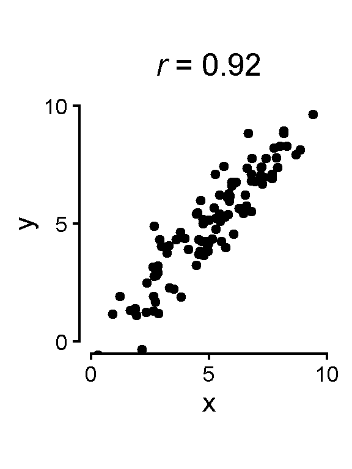
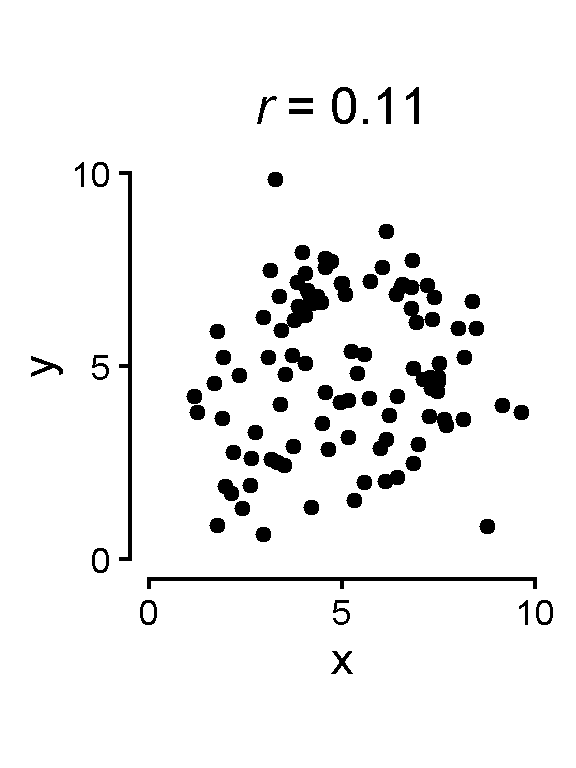
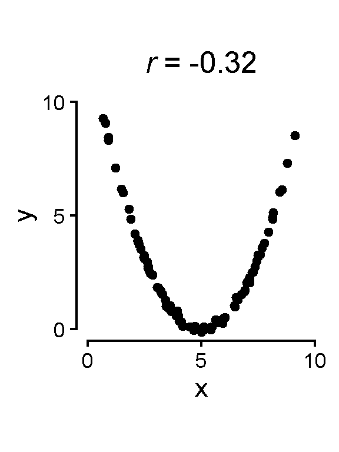
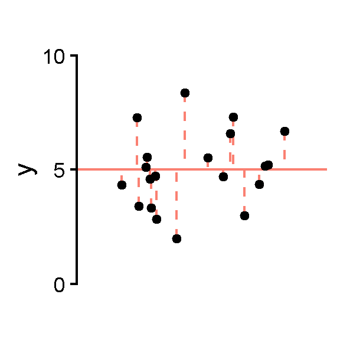
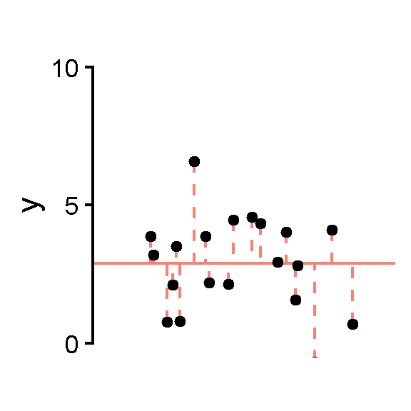
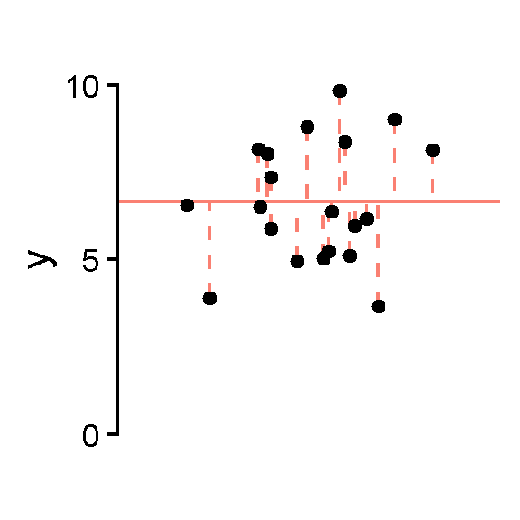
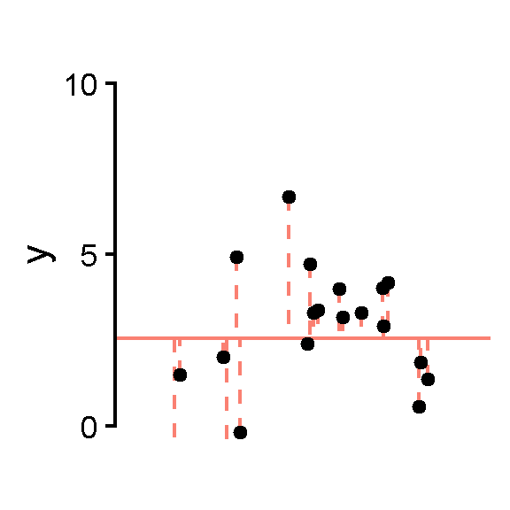

n <- 100
d1 <- data.frame(x = runif(n, 2, 8) + rnorm(n, 0, 1)) |>
mutate(y = x + rnorm(n, 0, 1))
d2 <- data.frame(x = runif(n, 2, 8) + rnorm(n, 0, 1)) |>
mutate(y = runif(n, 2, 8) + rnorm(n, 0, 1))
d3 <- data.frame(x = runif(n, 2, 8) + rnorm(n, 0, 1)) |>
mutate(y = .5* (x - 5)^2 + rnorm(n, 0, .1))
d4 <- data.frame(x = runif(n, 1, 9) + rnorm(n, 0, .5)) |>
mutate(y = 2.5 * sin(2 * x) + 5 + rnorm(n, 0, .2))
sctplt <- function(df) {
r <- cor(df$x, df$y)
df |>
ggplot(aes(x = x, y = y)) +
geom_point() +
scale_x_continuous(breaks = c(0, 5, 10), labels = c(0, 5, 10)) +
scale_y_continuous(breaks = c(0, 5, 10), labels = c(0, 5, 10)) +
coord_cartesian(xlim = c(0, 10), ylim = c(0, 10)) +
guides(y = guide_axis(cap = "both"), x = guide_axis(cap = "both")) +
labs(title = paste("*r* =", round(r, 2))) +
theme_classic(base_size = 16) +
theme(aspect.ratio = 1,
plot.title = ggtext::element_markdown(hjust = .5))
}
sctplt(d1)
sctplt(d2)
sctplt(d3)
sctplt(d4)Correlation and Regression
PSYC 2020-A01 / PSYC 6022-A01 | 2025-11-14 | Lab 13
Correlation
Only measures linear relationships




Regression
If we consider “best” to mean minimizing the squared distances from the data, the mean is the best fit.
The mean has the smallest squared errors from the observations.



sctplt_mean(d1) +
geom_hline(aes(yintercept = mean(y)), color = "salmon") +
geom_segment(aes(y = y, yend = mean(y)), color = "salmon", linetype = "dashed") +
geom_point()
sctplt_mean(d2) +
geom_hline(aes(yintercept = mean(y)), color = "salmon") +
geom_segment(aes(y = y, yend = mean(y)), color = "salmon", linetype = "dashed") +
geom_point()
sctplt_mean(d3) +
geom_hline(aes(yintercept = mean(y)), color = "salmon") +
geom_segment(aes(y = y, yend = mean(y)), color = "salmon", linetype = "dashed") +
geom_point()Regression
This is equivalent to the “mean intercept model” regression equation
\[ y_i = \beta_0 + \epsilon_i \]



sctplt_mean(d1) +
geom_hline(aes(yintercept = mean(y)), color = "salmon") +
geom_segment(aes(y = y, yend = mean(y)), color = "salmon", linetype = "dashed") +
geom_point()
sctplt_mean(d2) +
geom_hline(aes(yintercept = mean(y)), color = "salmon") +
geom_segment(aes(y = y, yend = mean(y)), color = "salmon", linetype = "dashed") +
geom_point()
sctplt_mean(d3) +
geom_hline(aes(yintercept = mean(y)), color = "salmon") +
geom_segment(aes(y = y, yend = mean(y)), color = "salmon", linetype = "dashed") +
geom_point()Regression Example: penguins
Let’s predict penguins’ body mass!

With just this one variable, what would be our best prediction for these data? The mean!
If we needed to predict any random penguin’s body mass with only these data, our best estimate would be the mean, 4201.8.
Now, let’s take into account another variable: a penguin’s flipper length
Regression Example: penguins

penguins |>
ggplot(aes(y = body_mass_g, x = flipper_length_mm)) +
geom_hline(aes(yintercept = mean(body_mass_g, na.rm=T)),
color = "seagreen3", linewidth = 1.5) +
geom_point() +
scale_x_continuous(breaks = c(170, 210, 250)) +
scale_y_continuous(breaks = c(2000, 4500, 7000)) +
coord_cartesian(ylim = c(2000, 7000), xlim = c(170, 250), clip = "off") +
guides(y = guide_axis(cap = "both"), x = guide_axis(cap = "both")) +
theme_classic(base_size = 16) +
theme(aspect.ratio = 1)Now, let’s take into account another variable: a penguin’s flipper length
Just the mean no longer seems like our line of best fit
Regression Example in R: Line of best fit

penguins |>
ggplot(aes(y = body_mass_g, x = flipper_length_mm)) +
geom_hline(aes(yintercept = mean(body_mass_g, na.rm=T)),
color = "seagreen3", linewidth = 1.5, alpha = .33,
linetype = "dashed") +
geom_point() +
geom_line(data = predicted_data,
aes(x = flipper_length_mm, y = predicted_body_mass),
color = "seagreen3", linewidth = 1.5) +
scale_x_continuous(breaks = c(170, 210, 250)) +
scale_y_continuous(breaks = c(2000, 4500, 7000)) +
coord_cartesian(ylim = c(2000, 7000), xlim = c(170, 250), clip = "off") +
guides(y = guide_axis(cap = "both"), x = guide_axis(cap = "both")) +
theme_classic(base_size = 16) +
theme(aspect.ratio = 1)